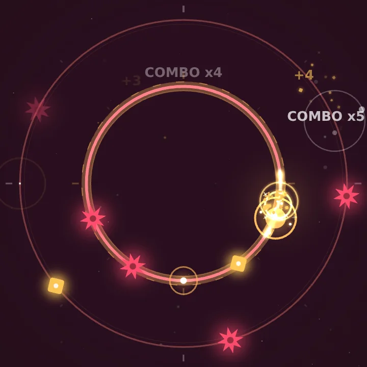
01EASY
Two orbits. One tap. Every jump on the beat.
A rhythm arcade in deep space. Tap to switch orbits, slip between the spikes in time with the music and ride levels built on our own tracks.
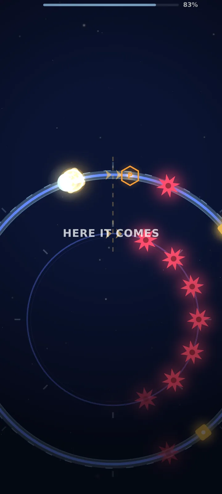
This is the real game. Tap the screen to play the level yourself.
Levels
Every level is built on its own song, written and mixed for Orbit Dash. Spikes land on the kick, the light changes with every section, and the last beat ends the level. Press play and feel it.

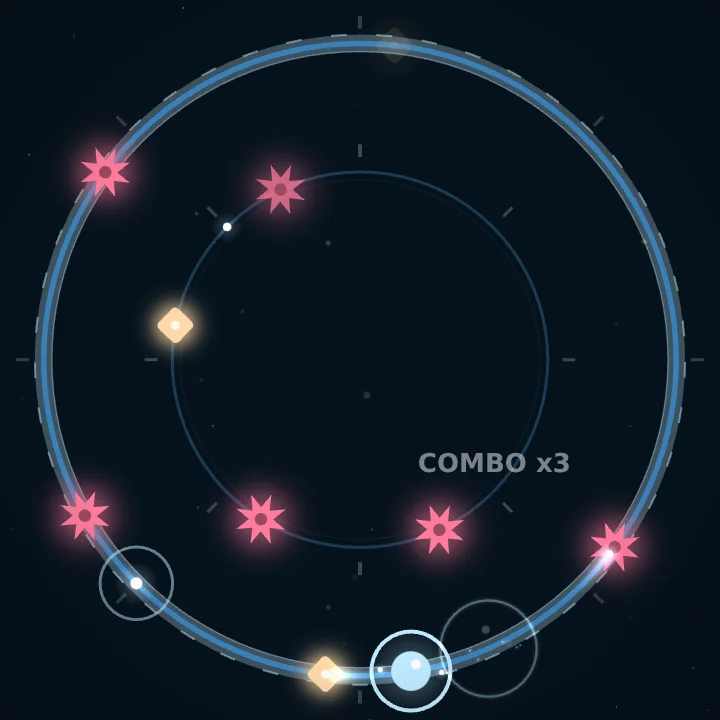
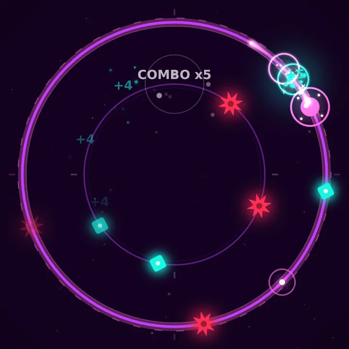
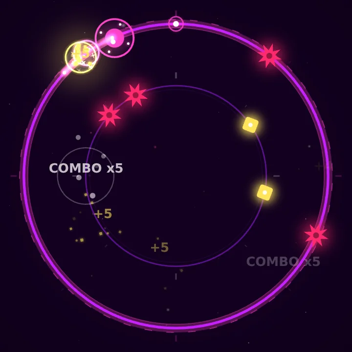
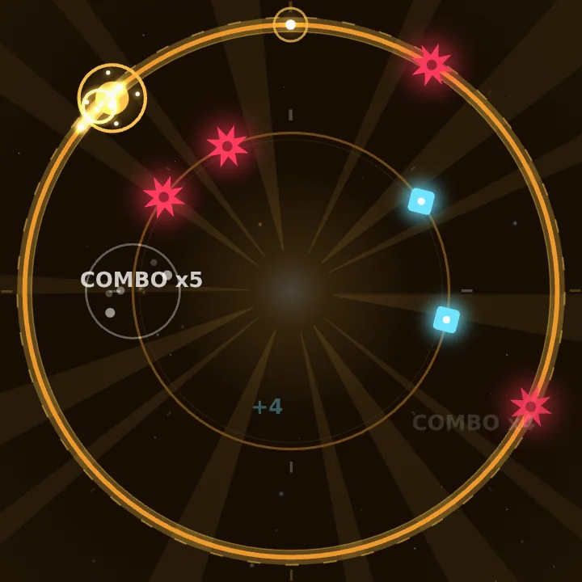
12-second previews. The full tracks are in the game.
How to play
Your ball races around a ring. One tap anywhere and it jumps to the other orbit — that's the whole control.
The spikes come with the music. Tap in time and you slip between them; jumps on the beat build your combo.
Survive to the end of the song to clear the level. Catch every gem with 90% of your jumps on the beat and you win its crown.
Features
Five hand-built levels, each a short film: the camera moves with the song, the light changes with every section and the finale lands on the very last beat.
No song and no finish line: the ring keeps speeding up. How long can you last?
Unlock the third ring. It comes online mid-run — and every gem on it counts double.
Eight palettes and seven permanent upgrades: magnet, shield, combo keeper — build your run.
Three fresh missions every day. Keep the streak alive — day seven pays the most.
Stuck on a level? Practise from checkpoints, or watch it played perfectly first.
Every new best goes straight to the leaderboard. Beat your friends, then the world.
Screenshots
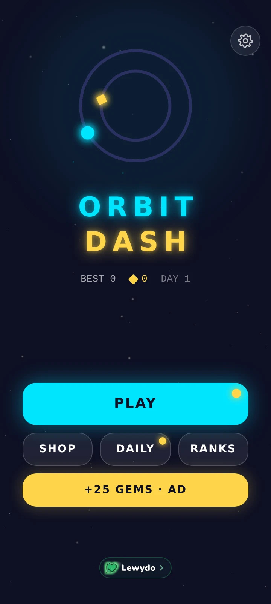
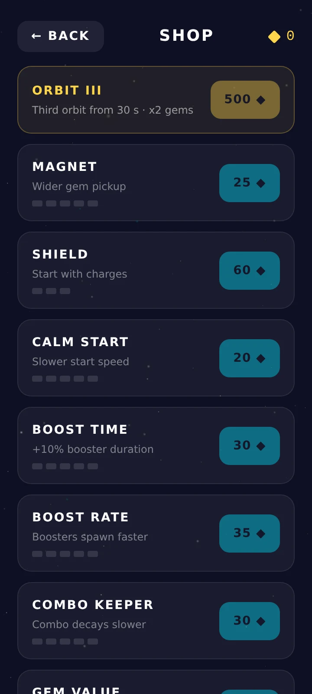
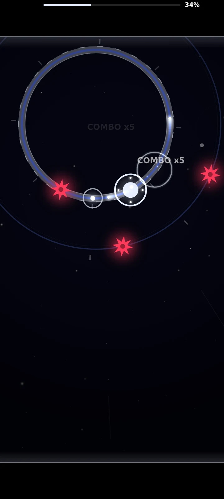
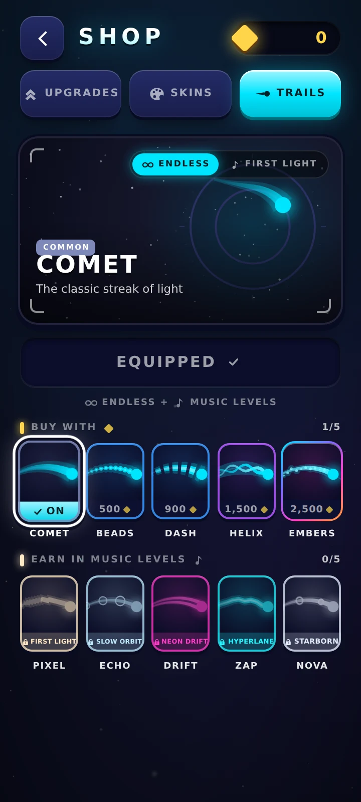
Play
The whole game runs in your browser — phone or desktop, nothing to install. Your progress stays in this browser; the Android app keeps its own.
Studio
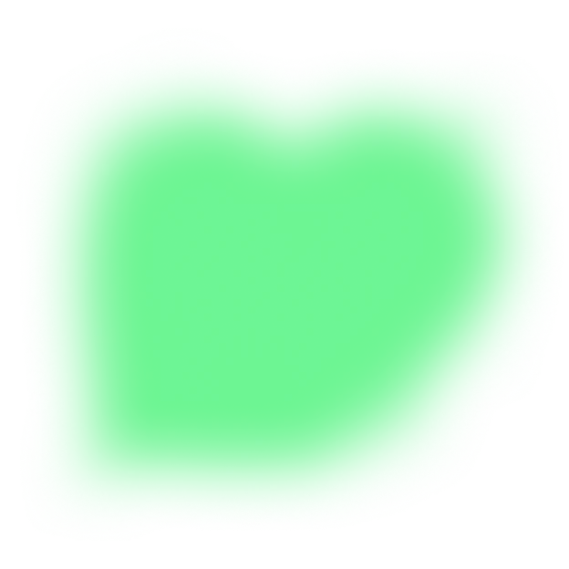
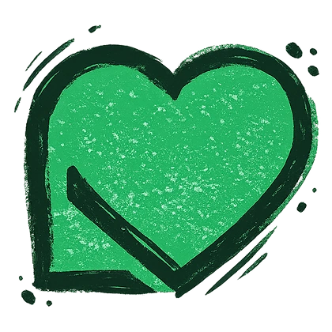


Lewydo is a two-person indie game studio from Ukraine. Vlad codes, Lilya designs. Together we make the games we love to play.
Thank you for playing!